Antes uma brilhante professora de magia, Iris deixou que sua ambição a conduzisse a um poder proibido. Agora, ligada às sombras, ela retorna com uma energia destrutiva incomparável. Este guia revela como construir, equipar e liberar todo o seu potencial em Hero Wars: Dominion Era!
Desde danos puros devastadores que atravessam tanques até formações estratégicas de equipe que amplificam suas artes sombrias, você aprenderá a transformar Iris em uma das suas Magas mais letais. Seja você um iniciante ou um jogador experiente, este guia ajudará a dominar cada feitiço dela.
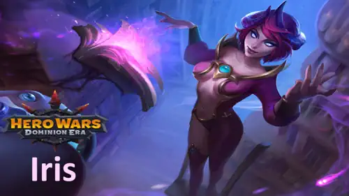
Guia de Iris - Hero Wars: Dominion Era, um jogo desenvolvido pela Nexters.
Quem é Iris?
Iris é uma Maga da retaguarda que usa a Inteligência como seu atributo principal. Antigamente uma mentora respeitada, ela se tornou um receptáculo de magia proibida após roubar o tomo Umbra do Arquidemônio, transformando-se para sempre em uma feiticeira movida por poder e vingança.
Classe: Maga
Posição: Retaguarda
Atributo Principal: Inteligência
Com sua primeira habilidade, Iris causa um dano puro devastador que ignora defesas, tornando-se uma das poucas heroínas capazes de derreter rapidamente tanques como Corvus or Julius.
Combine-a com Nebula ou Celeste para aumentar seu poder mágico, e ela se tornará uma temível causadora de dano principal capaz de virar batalhas a seu favor.
Prós e Contras da Iris - Hero Wars: Web & Facebook
✅ Prós
Alto Dano Explosivo: A habilidade Expor a Alma da Iris pode eliminar instantaneamente até mesmo tanques fortes quando usada no momento certo.
Dano Puro: Seu dano ignora armadura e defesa mágica, tornando-a extremamente eficaz contra heróis com alta defesa.
Forte Sinergia: Funciona muito bem com heróis que conseguem focar ou finalizar inimigos enfraquecidos, como Dante, Keira ou K’arkh.
Eficaz no Ataque e na Defesa: Pode ser usada tanto na Arena quanto nas Guerras de Guilda, oferecendo grande versatilidade nas composições de equipe.
❌ Contras
Baixa Sobrevivência: Iris é frágil e pode ser facilmente eliminada por heróis de dano físico antes de conseguir usar suas habilidades.
Dependente de Energia: Precisa carregar energia para ativar Expor a Alma, o que a deixa vulnerável contra heróis como Jorgen.
Fraca Contra Heróis Anti-Magia: Cornelius e Rufus podem neutralizá-la completamente.
Sensível à Posição: Sua eficiência depende da formação da equipe e da velocidade com que ela consegue mirar no tanque principal.
Não Ideal para Lutas Longas: Em batalhas prolongadas, ela perde eficiência se seu dano explosivo não eliminar alvos importantes logo no início.
Prioridade de Aprimoramento das Habilidades de Iris - Hero Wars: Dominion Era
Aprenda como funcionam as habilidades de Iris e quais aprimorar primeiro! Este guia explica cada habilidade de forma simples para que você possa aumentar seu poder de maneira eficaz.
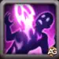
Expor a Alma
Como funciona: Iris revela a alma do inimigo mais próximo por 13 segundos. Qualquer dano que a alma receber é imediatamente transferido como dano puro para o corpo real do inimigo — ou seja, ignora completamente a armadura e a defesa mágica. É especialmente poderosa contra tanques e heróis com alta defesa.
Fórmula: Dano Puro = (200% da Vida + Nível da Habilidade * 350 + 100).
Prioridade de Evolução:Muito Alta – Esta é a habilidade mais poderosa de Iris. Ela define completamente seu estilo de jogo, permitindo destruir tanques com dano inevitável. Maximize esta habilidade primeiro para obter o maior impacto nas batalhas.
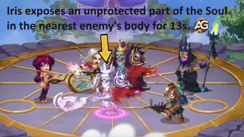
Habilidade - Expor a Alma, Hero Wars Dominion Era.
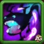
Criatura de Outro Mundo
Como funciona: Iris invoca um familiar sombrio próximo ao inimigo mais distante. A criatura se move em direção a ela, mordendo os inimigos ao longo do caminho. Cada mordida é mais forte que a anterior, causando Ataque Físico crescente à medida que retorna para Iris.
Fórmula de Ataque Físico: (37% do Ataque Mágico + Nível da Habilidade * 65) na primeira mordida, e cada mordida seguinte adiciona Ataque Físico de (9% do Ataque Mágico + Nível da Habilidade * 25).
Prioridade de Evolução:Alta – Esta habilidade fornece dano mágico constante e carrega a habilidade de sinergia de Iris. É uma excelente fonte secundária de poder e deve ser aprimorada depois de Expor a Alma.
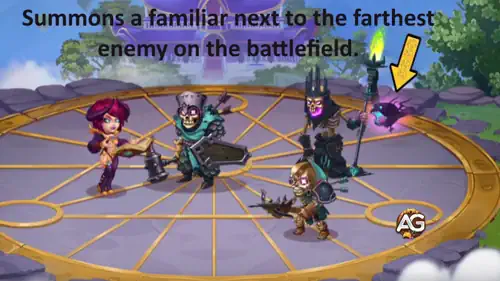
Habilidade - Criatura de Outro Mundo, Hero Wars Dominion Era.
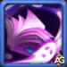
Sinergia Demoníaca
Como funciona: Após o familiar retornar para Iris, ele transfere toda a energia (Fúria da Alma) coletada com as mordidas. Cada carga aumenta o próximo ataque básico de Iris, adicionando um poderoso Ataque Físico.
Fórmula: Ataque Físico = (35% do Ataque Mágico + Nível da Habilidade * 20 + 650) por carga.
Prioridade de Evolução:Média-Alta – Esta habilidade adiciona um bom dano bônus quando combinada com os ataques do familiar. É muito útil para aumentar o DPS constante, mas não é tão essencial quanto sua principal fonte de dano.
Como funciona: Iris drena uma parte da vida de todos os inimigos, cria uma Semente da Destruição e a lança contra o inimigo mais próximo. O ataque causa dano físico igual ao total de vida absorvida.
Fórmula de Vida Absorvida: (25% do Ataque Mágico + Nível da Habilidade * 80 + 3200) de vida absorvida por inimigo.
Prioridade de Evolução:Média – Esta habilidade ajuda a causar dano extra, mas como depende da vida dos inimigos e não é dano puro, é menos eficaz que as habilidades principais. Aprimore-a por último se tiver recursos sobrando.
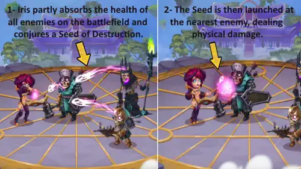
Habilidade - Semente da Destruição, Hero Wars Dominion Era.
Melhor Visual para Iris - Hero Wars: Dominion Era
Descubra quais visuais da Iris realmente valem o investimento! Este guia explica o que cada visual faz, como melhora seus atributos e a ordem correta de aprimoramento.
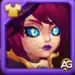
Visual Padrão (Inteligência)
Bônus de atributo: Inteligência +1.365
- Ataque mágico proveniente da Inteligência: +4.095
- Defesa mágica proveniente da Inteligência: +1.365
- Ataque físico proveniente da Inteligência: +1.365
Prioridade de Evolução:Alta – Este visual melhora o atributo principal de Iris, a Inteligência, aumentando seu dano, defesa e desempenho geral. É sempre um investimento inicial sólido.
Total de Pedras de Visual de Inteligência para o nível máximo:
30.825
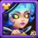
Visual Cibernético
Bônus de atributo: Ataque Mágico +10.650
Prioridade de Evolução:Muito Alta – Este é o visual ofensivo mais importante de Iris. Ele aumenta diretamente o Ataque Mágico, fortalecendo todas as suas habilidades de dano, inclusive o dano puro. Priorize este primeiro para maximizar o potencial ofensivo.
Total de Pedras de Visual de Inteligência para o nível máximo:
55.410
Visual de Praia
Bônus de atributo: Vida +106.645
Prioridade de Evolução:Média – O Visual de Praia aumenta a sobrevivência de Iris, ajudando-a a resistir a danos em área. No entanto, como ela luta na retaguarda, o efeito é menos relevante do que seus visuais focados em ataque.
Total de Pedras de Visual de Inteligência para o nível máximo:
55.410
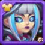
Visual Estelar
Bônus de atributo: Armadura +10.650
Prioridade de Evolução:Baixa – A Armadura não beneficia muito Iris, já que ela depende de distância e dano mágico. Este visual tem valor defensivo limitado e deve ser aprimorado apenas depois dos outros.
Total de Pedras de Visual de Inteligência para o nível máximo:
55.410
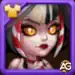
Visual de Baile de Máscaras
Bônus de atributo: Penetração de Armadura +10.650
Prioridade de Evolução:Média-Alta – Este visual concede Penetração de Armadura, melhorando o dano físico da habilidade Semente da Destruição. Não é essencial, mas oferece boa versatilidade em equipes com dano misto.
Total de Pedras de Visual de Inteligência para o nível máximo:
55.410
Prioridade de Evolução dos Glifos da Iris
Iris se beneficia muito de glifos que aprimoram seu potencial mágico ofensivo, permitindo que ela destrua as almas inimigas mais rapidamente. Glifos secundários aumentam sua sobrevivência contra equipes mais fortes.
1º Glifo – Ataque Mágico
Bônus de atributo: +6.500
Prioridade de Evolução:Muito Alta – O Ataque Mágico aumenta diretamente todas as habilidades ofensivas da Iris, tornando este glifo sua principal prioridade para maximizar o dano total.
2º Glifo – Vida
Bônus de atributo: +62.200
Prioridade de Evolução:Média-Alta – O aumento de Vida melhora a sobrevivência da Iris, permitindo que ela resista tempo suficiente para executar seu combo mortal. É especialmente útil em batalhas na Arena e no Cerco à Cidade das Guildas (CoW).
3º Glifo – Defesa Mágica
Bônus de atributo: +6.500
Prioridade de Evolução:Média – A Defesa Mágica é útil em situações contra magos poderosos, mas não impacta diretamente o dano ofensivo de Iris.
4º Glifo – Penetração de Armadura
Bônus de atributo: +6.500
Prioridade de Evolução:Alta – A Penetração de Armadura ajuda as partes físicas do dano e os efeitos de sinergia da Iris a causarem dano consistente contra inimigos com alta armadura, sendo um ótimo atributo ofensivo secundário.
5º Glifo – Inteligência
Bônus de atributo: +1.135
- Ataque Mágico proveniente da Inteligência: +3.405
- Defesa Mágica proveniente da Inteligência: +1.135
- Ataque Físico proveniente da Inteligência: +1.135
Prioridade de Evolução:Alta – A Inteligência concede um ótimo bônus ao Ataque Mágico (+3.405), sendo quase metade tão eficaz quanto um visual de Ataque Mágico, além de aumentar a Defesa Mágica. Um atributo sólido para equilíbrio entre poder e resistência.
Prioridade de Evolução dos Artefatos da Iris - Hero Wars: Dominion Era
Os artefatos da Iris influenciam diretamente seu dano mágico, sua sobrevivência e sua consistência em combate. Priorizar os artefatos corretos aumenta significativamente seu potencial explosivo e o valor de suporte para a equipe.
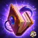
Artefato de Arma – Grimório das Almas Escravizadas
Bônus de atributo: Ataque Mágico +50.190
Prioridade de Evolução:Muito Alta – Este artefato é ativado com a habilidade suprema da Iris, “Quebradora de Escudos”, e concede um poderoso bônus de Ataque Mágico a toda a equipe por 9 segundos. Ele aumenta diretamente o dano explosivo dela e é essencial tanto para batalhas PvP quanto PvE. Aprimore este artefato primeiro para obter o maior aumento de dano.
Artefato de Livro – Tomo do Conhecimento Arcano
Bônus de atributo: Vida +83.649, Ataque Mágico +16.731
Prioridade de Evolução:Alta – O livro oferece Vida extra para maior sobrevivência e um bônus adicional de Ataque Mágico para escalonamento constante. Ele ajuda a Iris a permanecer viva tempo suficiente para executar seu combo principal de dano. Um ótimo equilíbrio entre poder e resistência, tornando-o sua segunda prioridade.
Artefato de Anel – Anel da Inteligência
Bônus de atributo: Inteligência +6.249
- Ataque Mágico proveniente da Inteligência: +18.747
- Defesa Mágica proveniente da Inteligência: +6.249
- Ataque Físico proveniente da Inteligência: +6.249
Prioridade de Evolução:Média-Alta – O anel de Inteligência fornece um aumento passivo sólido de Ataque Mágico e Defesa Mágica, melhorando o desempenho geral. No entanto, ele não possui efeito em equipe nem é ativado por habilidades, por isso deve ser aprimorado depois da arma e do livro.
Melhor Patronagem para Iris
Descubra os melhores mascotes para a Iris em Hero Wars: Dominion Era e veja como cada bônus de patronagem aprimora seu poderoso dano mágico e sua sobrevivência em batalha.
Albus é o melhor mascote para a Iris porque sua patronagem aumenta diretamente o dano puro, que é a principal fonte do poder destrutivo dela. Como sua primeira habilidade, Expor a Alma, transfere dano puro para o alvo, Albus amplifica significativamente o dano total causado. Seus atributos de patronagem (Ataque Mágico e Ataque Físico) também escalam bem com a fórmula de dano da Iris, tornando-o ideal tanto contra chefes de PvE quanto contra tanques em PvP.
Biscuit é uma boa alternativa para a Iris ao enfrentar equipes com cura intensa, como aquelas com Celeste ou Martha. Sua habilidade reduz toda a cura recebida pelos inimigos atingidos pelos ataques da Iris. Isso ajuda a garantir eliminações mais rápidas, especialmente quando seus ataques mágicos atingem múltiplos alvos. No entanto, Biscuit não aumenta o dano direto dela tanto quanto Albus, por isso ocupa o segundo lugar.
Oliver foca na sobrevivência, curando o herói quando sua vida cai abaixo de 50%. Embora isso ajude a Iris a sobreviver contra ataques explosivos, ela se beneficia mais de suporte ofensivo devido à sua posição na retaguarda e ao escalonamento de dano puro. Assim, Oliver é uma escolha defensiva para batalhas mais longas, ficando em terceiro lugar em prioridade.
Como Contra-Atacar a Iris em Hero Wars: Dominion Era
Aprenda quais são os melhores heróis para contra-atacar a Iris em Hero Wars: Dominion Era. Cada contra aproveita as fraquezas dela, reduzindo seu impacto mágico ou impedindo seu devastador combo de dano puro.
Cornelius
Cornelius é um forte contra para a Iris, pois sua habilidade Sabedoria Pesada atinge o inimigo com a maior Inteligência — o que quase sempre é a própria Iris. Seu monólito pode causar um dano explosivo massivo, muitas vezes eliminando-a instantaneamente. Além disso, sua Runa da Supressão reduz o Ataque Mágico, enfraquecendo o dano da Iris e tornando suas habilidades muito menos eficazes.
Jorgen
Jorgen contra-ataca a Iris bloqueando o ganho de energia dela por meio de sua habilidade Tormento da Impotência. Como a Iris depende fortemente de carregar energia para ativar Expor a Alma, Jorgen impede que ela a use rapidamente. Isso atrasa seu pico de dano, dando tempo para sua equipe eliminá-la antes que ela se torne perigosa.
Rufus é o maior contra para a Iris, pois sua habilidade Juramento de Rakashi o torna imune a dano mágico e a dano puro — exatamente os tipos de dano que Iris causa. Quando ela tenta atingi-lo com Expor a Alma ou qualquer uma de suas habilidades mágicas, Rufus simplesmente revive, tornando os principais ataques dela inúteis. Isso faz dele o tanque perfeito para anular completamente o poder ofensivo da Iris.
Melhor Bandeira de Guerra para Iris - Hero Wars
A Iris se beneficia principalmente de bandeiras que aumentam seu potencial de explosão mágica, enfraquecem as defesas inimigas ou aceleram o ganho de energia para ativar Expor a Alma mais rapidamente durante a batalha.
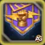
Bandeira de Guerra da Prontidão:
A Bandeira de Guerra da Prontidão é uma das melhores opções para a Iris. Ela concede 100 de energia ao herói mais recuado a cada 20 segundos, ajudando a Iris a ativar Expor a Alma com mais frequência. Como ela atua na retaguarda, aproveita esse bônus de forma extremamente eficiente.
Benefício para Iris e Equipe: Essa bandeira permite que a Iris comece a causar Dano Puro muito mais cedo, enfraquecendo rapidamente o tanque inimigo e abrindo caminho para que os causadores de dano finalizem a luta.
Bandeira de Guerra da Geada:
A cada 18 segundos, essa bandeira lança Geada nos inimigos, reduzindo o nível de suas habilidades em 2 por 8 segundos. Isso enfraquece significativamente o dano e a sobrevivência da equipe adversária, dando à Iris mais tempo para ativar suas habilidades de Dano Puro com segurança.
Benefício para Iris e Equipe: Funciona muito bem em equipes de controle ou defensivas, nas quais a Iris pode aproveitar inimigos enfraquecidos para maximizar seu potencial de explosão.
Bandeira de Guerra da Decadência:
Essa bandeira reduz a cura da equipe inimiga em 10%, facilitando para a Iris eliminar os heróis cujas almas foram expostas. É especialmente útil contra equipes com muita cura.
Benefício para Iris e Equipe: Combina perfeitamente com o dano explosivo da Iris, impedindo que curandeiros como Martha ou Celeste salvem os alvos expostos.
Melhores Times para Iris - Hero Wars: Dominion Era
Melhor Time da Iris 1
Pet
Pet Principal
Melhor Time da Iris 2
Pet
—
Pet Principal
Conclusão do Guia da Iris - Hero Wars: Dominion Era
Iris é uma maga da retaguarda altamente destrutiva, cuja força está em sua capacidade de causar enorme Dano Puro e eliminar rapidamente alvos principais. Suas habilidades, especialmente Expor a Alma, permitem que ela ignore defesas e derrote até mesmo os tanques mais resistentes quando bem apoiada.
Para maximizar sua eficiência, priorize os glifos e artefatos que aumentam o Ataque Mágico e a Inteligência, use mascotes como Albus para obter dano puro adicional e selecione Bandeiras de Guerra que acelerem o ganho de energia ou enfraqueçam as defesas inimigas.
Embora seja frágil e dependa bastante do posicionamento, uma equipe bem coordenada pode liberar todo o seu potencial, tornando Iris uma heroína capaz de mudar o rumo das batalhas tanto no PvE quanto no PvP.
Sobre o autor
Alexandre Domingos é pós-graduado em Engenharia e atua como Supervisor de Produção. Nas horas vagas, se aventura como youtuber e blogueiro no Alexandre Games, unindo sua paixão por tecnologia e estratégia com o mundo dos games. Desde os 5 anos mergulha nesse universo, jogando em plataformas clássicas como MSX, Master System, Nintendo e até em um velho PC 286. Desde 2019, Alexandre também joga Hero Wars e Mobile Legends, entre outros jogos mobile, criando guias, tutoriais e análises para a comunidade.
Você gostou do nosso Guia da Iris para Hero Wars Web e Facebook? Há algo que não entendeu ou gostaria de sugerir mudanças? Convidamos você a se juntar à nossa sessão de comentários na página do Alexandre Games Blog. Não hesite em expressar sua opinião, clarificar suas dúvidas e compartilhar sua sugestões. Clique no botão abaixo para começar:
 30.825
30.825